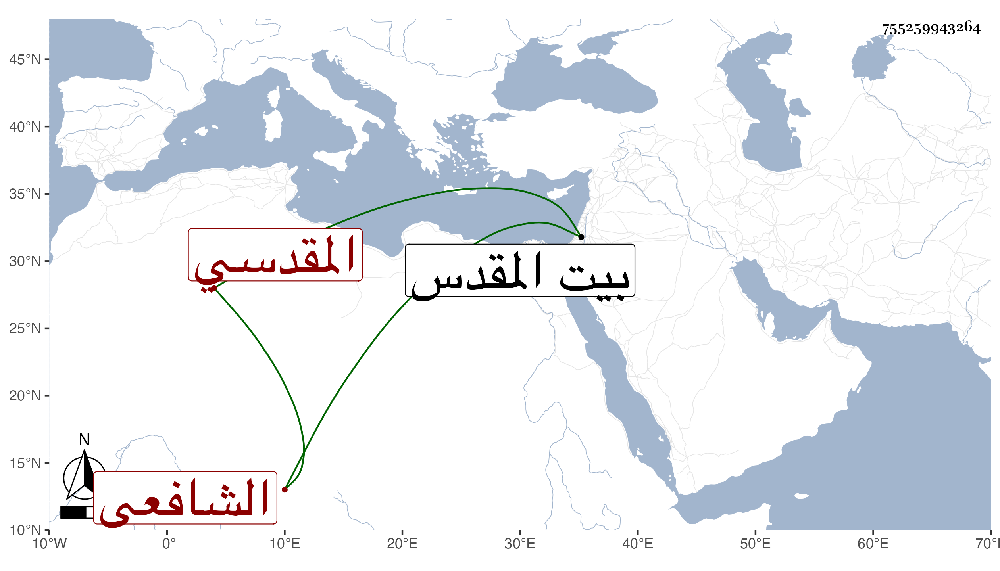

0902Sakhawi.DawLamic.ITO20230111-ara1.EIS1600.755259943264
Biography ID: 755259943264
330
أحمد بن محمد بن حسين الشهاب بن الشمس الأوتاري المقدسي الشافعي الآتي أبوه . ولد سنة اثنتين وعشرين وثمانمائة ببيت المقدس واشتغل وتميز وكان مقرئا أديبا ناظما ناثرا صاحب فنون . مات في يوم الأربعاء سابع رجب سنة أربع وسبعين رحمه الله .
